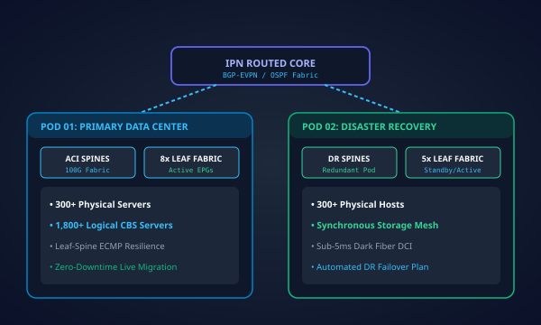
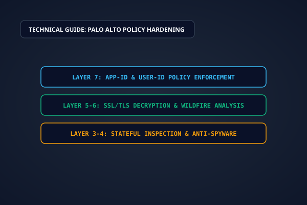

Network Security Professional, Infrastructure Leader and Cybersecurity Trainer with 17+ years of experience
designing, securing and managing enterprise network environments.
Mohammed Abdul MunemEnterprise Network & Security Architect
SEC ACTIVE
Professional Profile & Biography
Architecting Resilience with 17+ Years of Network Mastery
A strategic infrastructure leader and cybersecurity specialist dedicated to engineering fault-tolerant
enterprise networks, zero trust perimeters, and empowering cybersecurity professionals.
Executive Summary
With more than 17 years of hands-on experience in the Information Technology sector, I have designed, secured,
and scaled enterprise-grade networks across mission-critical sectors. My expertise bridges the gap between
high-level security governance and complex low-level packet switching, dynamic routing protocols, and
next-generation firewall configurations.
Throughout my career, I have orchestrated zero-downtime migrations from legacy stateful inspection platforms to
modern Next-Generation Firewalls (Palo Alto Networks, Fortinet FortiGate, Check Point),
configured complex BGP multihomed transit edge routing, and deployed multi-tenant Cisco ACI
software-defined data center fabrics.
Beyond architectural engineering, I am deeply committed to technical education. As a trainer and mentor, I have
guided aspiring and practicing network professionals through CCNA, CCNP, PCNSA, and specialized hands-on firewall lab workshops.
Directing the architecture, engineering, and continuous 24/7 security monitoring of enterprise network ecosystems
and DC/DR environments within regulated banking IT.
Lead the architecture, engineering, and continuous monitoring of enterprise network and security infrastructure within a regulated banking environment.
Define and govern end-to-end security requirements across the bank's IT ecosystem, ensuring strict compliance with regulatory, audit, and internal standards.
Design, deploy, and manage DC/DR network security eco-systems and advanced threat protection solutions to safeguard critical core banking systems.
Oversee deployment, configuration, and lifecycle management of network and security devices across primary Data Center, Disaster Recovery, and branch locations.
Plan, design, implement, troubleshoot, and maintain LAN, WAN, and DC/DR infrastructure to ensure five-nines (99.999%) high availability and business continuity.
Conduct rigorous technical and network security evaluations for IT initiatives to ensure secure design, risk mitigation, and proper implementation.
Lead incident response activities, perform root cause analysis (RCA), and implement corrective controls to reduce operational and cyber risk exposure.
Principal Network & Security Infrastructure Specialist
Core Banking Infrastructure & Enterprise Defense Systems
2021 – 2025Dhaka, Bangladesh
Engineered perimeter defense, Software-Defined Networking (Cisco ACI), and intrusion protection systems across multi-datacenter financial networks.
Planned, designed, configured, and maintained LAN/WAN architectures and Software-Defined Data Center fabrics using Cisco ACI spine-leaf topologies.
Deployed, configured, and hardened multi-vendor Next-Gen Firewalls: Palo Alto Networks, Fortinet FortiGate, Check Point Gaia, Cisco FTD/FMC, and Cisco ASA.
Integrated F5 BIG-IP (LTM and WAF), Blue Coat web proxies, Sophos UTM, Cisco ISE (NAC), and ARCON Privileged Access Management (PAM).
Configured and implemented enterprise intrusion detection and prevention systems (IDS/IPS) and Network Detection & Response (NDR).
Determined emerging technologies and engineering workflows that continuously improved the overall security posture and audit readiness of the banking system.
Conducted exhaustive technical evaluations and architectural vetting for enterprise-wide IT and infrastructure projects.
Cisco ACIPalo Alto NetworksFortinet FortiGateCheck PointF5 BIG-IPPAM / ARCONCisco ISE
Directed multi-datacenter routing, switching, application security, and enterprise wireless networks for large-scale commercial banking operations.
Planned, configured, and maintained Cisco ACI, Cisco & Juniper core routing/switching platforms, F5 load balancing, and Palo Alto Next-Gen Firewalls.
Implemented Anti-Virus, Anti-Spam, IPS (Intrusion Prevention System), and Web Application Firewall (WAF) along with application and web filtering policies.
Managed and operated controller-based enterprise wireless access points (Cisco, Ruckus, UniFi, and Altai) across headquarters and branch networks.
Analyzed and corrected complex packet-routing anomalies, performance degradations, and link flap events under tight SLA thresholds.
Hardened banking server operating systems, patch management workflows, system security baselines, and technical escalation processes.
Global Healthcare Technology & HIPAA-Compliant Operations
2015 – 2017Dhaka, Bangladesh & International Remotes
Engineered secure, ultra-low-latency worldwide Google Glass enterprise networks adhering to stringent HIPAA regulatory compliance.
Ensured secure, high-availability Google Glass network operations across remote medical transcription facilities globally per strict HIPAA compliance policies.
Served as Lead Support and Implementation Engineer for Next-Gen Firewalls, Cisco enterprise routers, switches, and centralized antivirus systems.
Planned and executed maintenance and service downtimes for zero-impact infrastructure upgrades across international remote offices.
Implemented global security tools, performed rigorous threat risk assessments on all new deployments, and maintained detailed network topology documentation.
Specialized expertise spanning critical infrastructure, data center fabrics, high-availability firewall clusters,
and next-generation security operations.
Network & Perimeter Security
Next-Generation Firewall architecture, deployment, and policy orchestration across Palo Alto Networks (PAN-OS & Panorama),
Fortinet FortiGate, Check Point Quantum Security, and Cisco FTD/ASA.
Palo Alto PCNSE certified engineering
Fortinet FortiGate HA clusters (FGCP)
Check Point Gaia OS & ClusterXL
Zero Trust Network Architecture (ZTNA)
Enterprise Routing & Switching
Multi-protocol routing architectures including BGP internet edge peering, interior OSPF, carrier-grade 64-district MPLS
WAN backbones, VLAN segmentation, and Cisco ACI Software-Defined Networking fabrics.
Cisco ACI spine-leaf DC architecture
BGP route filtering & multi-homing peering
Cisco Catalyst, Nexus 9000 & Juniper Junos
Carrier-grade MPLS L2/L3 VPN networks
Data Center & HA Infrastructure
Engineering Tier-III primary data center and Disaster Recovery (DC/DR) synchronization links. Ensuring five-nines (99.999%)
continuous availability with Cisco Nexus vPC, DWDM dark fiber, and automated failover.
DC-to-DR real-time synchronous replication
F5 BIG-IP LTM & GSLB load balancing
Active/Passive & Active/Active cluster failover
Out-of-band management & telemetry monitoring
Banking Security & Access Control
Securing Core Banking Systems (CBS), SWIFT messaging environments, ATM switches, and corporate endpoints.
Implementation of ARCON Privileged Access Management (PAM) and Cisco ISE 802.1X Network Access Control.
Core Banking VRF-Lite micro-segmentation
ARCON PAM privileged session monitoring
Cisco ISE 802.1X dynamic endpoint profiling
Strict alignment with Central Bank standards
Application Security & Proxy Defense
Defending critical applications against OWASP Top 10 vulnerabilities with Web Application Firewalls (WAF),
Blue Coat web proxies, SSL/TLS decryption, and Anti-DDoS volumetric traffic scrubbing.
OWASP Top 10 & API security protection
Blue Coat ProxySG SSL interception
Anti-DDoS & BGP Flowspec scrubbing
Network Detection & Response (NDR)
Governance, Training & Mentorship
Over a decade of hands-on training and mentorship for aspiring network engineers. ITIL v4 certified governance,
Change Advisory Board (CAB) leadership, vendor SLA management, and technical documentation.
Hands-on EVE-NG lab training & coaching
ITIL v4 Foundation certified practices
Comprehensive disaster recovery runbooks
Vendor negotiation & SLA enforcement
Enterprise Deliverables & Case Studies
Featured Enterprise Network & Cybersecurity Projects
Delivering enterprise-scale network transformation, data center modernization,
application security, and cyber defense solutions for mission-critical environments.

Data Center Networking & SDN
Cisco ACI Multi-Pod SDN Transformation – Primary DC & DR
Migration from traditional network infrastructure to a Cisco ACI Multi-Pod Software-Defined Networking (SDN) architecture across primary and disaster recovery data centers. Sized, commissioned, and deployed 8 Leaf switches in primary DC and 5 in DR, migrating over 300 physical and 1,800 logical servers in DC with 300+ physical servers in DR under minimal service disruption.
Cisco ACIMulti-Pod SDNLeaf-Spine ArchitectureData Center NetworkingDC/DR MigrationNetwork Architecture
Enterprise Network Segmentation & Cisco ACI SDN Migration
Transformation of a traditional flat network environment into a segmented Cisco ACI SDN architecture, migrating more than 500 servers, including workloads running on approximately 20-year-old legacy infrastructure. Focused on network isolation, controlled application communication, PCI DSS compliance, and secure Active-Passive DC-DR transit.
Cisco ACISDNNetwork SegmentationPCI DSSLegacy Infrastructure MigrationData Center Security
Deployment of F5 BIG-IP 5000 Series Web Application Firewall (WAF) and Local Traffic Manager (LTM) solutions to protect and manage more than 140 business-critical services. Strengthened application-layer security, traffic distribution, application availability, and service delivery for financial services supporting over 3 million customers nationwide.
Cisco ACI Multi-Site SDN Deployment – Active-Active Data Centers
Design and migration of traditional data center networking to a Cisco ACI Multi-Site SDN architecture across two data centers. Managed architecture planning, infrastructure sizing, commissioning, deployment, and migration, with 8 Leaf switches at each site supporting an Active-Active model covering more than 600 physical servers across DC and DR environments.
Cisco ACIMulti-Site SDNActive-Active Data CenterLeaf-Spine ArchitectureData Center MigrationHigh Availability
Deployment of F5 Global Server Load Balancing (GSLB) between primary and disaster recovery data centers to improve the availability and resilience of more than 100 internet-facing services. Enabled intelligent traffic distribution across geographically separate data centers, supporting an Active-Active service delivery architecture and robust DR capabilities.
Cisco FTD 4000 Series to Check Point Quantum 16000 Migration
Migration from Cisco Firepower Threat Defense (FTD) 4000 Series to Check Point Quantum 16000 Series Next-Generation Firewall infrastructure. Migrated and validated more than 2,500 security policies while protecting critical banking systems, database environments, and banking Management Zone (MZ) services under zero disruption.
Cisco FTDCheck Point Quantum 16000NGFWFirewall MigrationSecurity Policy MigrationBanking Infrastructure Security
Deployment and commissioning of a next-generation Fortinet Network Detection and Response (FortiNDR) solution in a financial organization. Integrated high-performance network traffic monitoring capabilities exceeding 100 Gbps to improve visibility, identify suspicious traffic patterns, detect potential threats, and strengthen cyber defense.
Enterprise Network Access Control (NAC) Deployment
Deployment and commissioning of an enterprise Network Access Control (NAC) solution designed to secure network access for more than 6,000 users. Strengthened endpoint visibility, enforced network access policies, improved user and device authentication controls, and eliminated unauthorized access risks across corporate IT infrastructure.
On-Premises SIEM & Security Operations Center (SOC) Deployment
Design, deployment, and commissioning of an on-premises open-source Security Information and Event Management (SIEM) platform and Security Operations Center (SOC) environment for a financial institution. Provided centralized log collection, security event correlation, infrastructure monitoring, threat visibility, and incident investigation across 7,000+ hosts.
Modernized WAN infrastructure across hundreds of commercial bank branches and remote service centers using primary carrier MPLS L3VPN paired with automated IPsec 4G/LTE backup failover.
Deployed ARCON PAM enterprise platform across all critical network switches, core routers, firewalls, and server nodes. Enforced session recording, automated password rotation, and MFA for all systems administrators.
Centralized Network Operations Center (NOC) Telemetry
Implemented unified observability platform utilizing SolarWinds NPM, NetFlow Analyzer, and Syslog-NG. Created automated threshold alerting that decreased Mean Time To Resolution (MTTR) by 60%.
Cisco ACI Multi-Pod SDN Transformation – Primary DC & DR
Architecture Challenge
A leading commercial bank was operating on legacy multi-tier data center switching fabric facing port saturation, lack of centralized policy automation, complex disaster recovery synchronization, and maintenance bottlenecks during routine hardware expansions.
Engineered Solution & Scope
Architected, sized, commissioned, and deployed a robust Cisco ACI Multi-Pod SDN fabric across Primary Data Center and Disaster Recovery facilities.
Deployed 8 high-performance Leaf switches in the Primary DC and 5 Leaf switches in the DR site, interconnecting both pods over an automated Inter-Pod Network (IPN) with BGP-EVPN.
Executed phased migration of more than 300 physical enterprise servers and 1,800 logical workloads in the Primary DC, alongside 300+ physical servers in the DR facility.
Implemented Endpoint Groups (EPGs), micro-segmentation policies, and centralized APIC controller management with zero packet loss during core transaction hours.
Verifiable Outcomes & Impact
Strengthened the core banking network foundation with sub-second leaf-spine ECMP failover, unified cross-site policy governance, automated configuration delivery, and 99.999% SLA availability.
Technology Stack:
Cisco ACIMulti-Pod SDNLeaf-Spine ArchitectureData Center NetworkingDC/DR MigrationNetwork Architecture
Enterprise Network Segmentation & Cisco ACI SDN Migration
Architecture Challenge
Critical enterprise workloads, including core banking systems running on legacy platforms approximately two decades old, resided within unsegmented flat network broadcast domains with uncontrolled lateral traffic and audit vulnerabilities under PCI DSS.
Engineered Solution & Scope
Designed and implemented a granular Cisco ACI Software-Defined Networking segmentation model to replace legacy flat routing topologies.
Seamlessly migrated 500+ servers into dedicated Endpoint Groups (EPGs) and Bridge Domains, safely accommodating 20-year-old legacy platforms without service disruption.
Defined strict inter-EPG contracts and whitelist communication policies, enforcing rigorous isolation of the Cardholder Data Environment (CDE).
Configured secure, encrypted Active-Passive communication between the Primary Data Center and Disaster Recovery site for mission-critical transactional integrity.
Verifiable Outcomes & Impact
Achieved full regulatory compliance with PCI DSS requirements, eliminated uncontrolled lateral movement risks across the server estate, and established a scalable zero-trust network perimeter.
Technology Stack:
Cisco ACISDNNetwork SegmentationPCI DSSLegacy Infrastructure MigrationData Center Security
Rapid growth of digital banking services serving over 3 million citizens introduced heightened Layer-7 web application attacks (SQLi, XSS, credential stuffing) alongside increasing SSL termination loads on backend web and application servers.
Engineered Solution & Scope
Deployed and configured carrier-grade F5 BIG-IP 5000 Series appliances in an Active/Standby Sync-Failover cluster for continuous high availability.
Onboarded and hardened more than 140 business-critical services across retail banking, payment gateways, mobile app backends, and administrative portals.
Crafted comprehensive F5 Advanced WAF security policies adhering to OWASP Top 10 mitigation guidelines with real-time attack signature updates and bot defense.
Configured Local Traffic Manager (LTM) for hardware-accelerated SSL/TLS offloading, advanced health monitoring probes, and optimized load balancing algorithms.
Verifiable Outcomes & Impact
Protected 140+ core services for 3M+ active banking customers, reduced backend server CPU utilization by 45% via SSL offloading, and blocked automated zero-day Layer-7 attacks without false-positive disruption.
Cisco ACI Multi-Site SDN Deployment – Active-Active Data Centers
Architecture Challenge
Geographically dispersed data centers operated as isolated silos requiring manual intervention during regional disasters, limiting the organization's ability to run simultaneous Active-Active transactional workloads across sites.
Engineered Solution & Scope
Architected, sized, and deployed a dual-site Cisco ACI Multi-Site SDN fabric orchestrated centrally via Cisco Multi-Site Orchestrator (MSO / Nexus Dashboard).
Installed and configured 8 Leaf switches at Site 01 (Primary DC) and 8 Leaf switches at Site 02 (Secondary DC) linked by an Intersite Network (ISN) running BGP-EVPN.
Executed full-scale migration covering more than 600 physical servers across both data center facilities with cross-site stretched EPGs and micro-segmentation.
Established automated cross-site failure domains, preventing broadcast storms or fault cascades between sites while maintaining Active-Active transaction processing.
Verifiable Outcomes & Impact
Delivered true Active-Active DC operational resilience with zero downtime, transparent live workload mobility across geographical locations, and maximum compute utilization.
Technology Stack:
Cisco ACIMulti-Site SDNActive-Active Data CenterLeaf-Spine ArchitectureData Center MigrationHigh Availability
Manual DNS record modifications during primary data center maintenance or outages resulted in extended Recovery Time Objective (RTO) delays, DNS TTL caching staleness, and localized banking downtime for customers.
Engineered Solution & Scope
Engineered and deployed F5 BIG-IP DNS (GSLB) appliances across geographically separated Primary DC and Disaster Recovery data centers.
Configured authoritative DNS Anycast listening listeners and synchronized health data using encrypted iQuery mesh protocols between data center pairs.
Integrated intelligent geo-proximity, round-robin, and health-checked ratio routing across more than 100 mission-critical internet-facing financial services.
Programmed continuous application-layer health probes to automatically remove degraded endpoints and re-route client requests in sub-3 seconds.
Verifiable Outcomes & Impact
Enabled seamless Active-Active traffic distribution for 100+ public financial services, reducing failover RTO from hours to under 3 seconds with zero manual intervention required.
Cisco FTD 4000 Series to Check Point Quantum 16000 Migration
Architecture Challenge
End-of-cycle perimeter and internal firewalls required replacement with modern, high-throughput Next-Generation Firewalls capable of deep packet inspection, line-rate SSL decryption, and zero-day threat prevention for mission-critical banking core databases.
Engineered Solution & Scope
Formulated a complete phased migration strategy from Cisco Firepower Threat Defense (FTD) 4000 Series clusters to Check Point Quantum 16000 Series appliances.
Audited, normalized, deduplicated, and validated more than 2,500 complex security policy rulebases, NAT translation matrices, and VPN gateway endpoints.
Implemented strict security boundaries protecting Core Banking databases, card payment interfaces, and secure Management Zone (MZ) administration rings.
Executed seamless maintenance cutovers with ClusterXL high availability state synchronization, achieving zero disruption to active transactional traffic.
Verifiable Outcomes & Impact
Successfully modernized enterprise firewall security with 100% rule integrity across 2,500+ policies, ultra-low latency packet inspection, and rock-solid defense for banking databases.
Technology Stack:
Cisco FTDCheck Point Quantum 16000NGFWFirewall MigrationSecurity Policy MigrationBanking Infrastructure Security
Modern advanced persistent threats (APTs) and sophisticated ransomware strains increasingly utilize encrypted lateral channels and non-standard ports to bypass traditional signature-based perimeter defenses undetected.
Engineered Solution & Scope
Engineered, commissioned, and fine-tuned a high-performance Fortinet FortiNDR (Network Detection and Response) appliance cluster within a Tier-4 banking network.
Aggregated passive optical TAPs and core switch SPAN sessions, providing full packet capture and deep inspection capabilities exceeding 100 Gbps line rates.
Leveraged artificial intelligence (AI) and machine learning (ML) Virtual Security Analyst neural networks to profile baseline east-west and north-south traffic.
Integrated real-time behavioral anomaly detection, automated IOC matching, lateral movement flags, and instant quarantine integration with perimeter firewalls.
Verifiable Outcomes & Impact
Delivered 100% east-west internal network traffic visibility at 100+ Gbps speeds, detecting anomalies and malicious beaconing in sub-second intervals to protect banking assets.
Enterprise Network Access Control (NAC) Deployment
Architecture Challenge
Rapid expansion of endpoints across multi-branch headquarters and operational facilities created visibility blindspots, rogue device connection hazards, and audit non-compliance risks from unmanaged laptop and IoT devices.
Engineered Solution & Scope
Designed and rolled out an enterprise-wide Network Access Control (NAC) architecture securing access for more than 6,000 users and workstations.
Implemented IEEE 802.1X port-based authentication, Active Directory certificate enrollment (EAP-TLS), and MAC Authentication Bypass (MAB) for non-802.1X devices.
Constructed dynamic VLAN assignment matrices based on user role, endpoint security posture (patch level, antivirus running state), and machine domain membership.
Enforced automated remediation quarantine workflows that immediately isolate non-compliant or rogue devices from accessing corporate and banking networks.
Verifiable Outcomes & Impact
Achieved total endpoint visibility across 6,000+ corporate users, eliminated rogue unauthorized network connections, and satisfied stringent regulatory access security standards.
On-Premises SIEM & Security Operations Center (SOC) Deployment
Architecture Challenge
Fragmented logs across thousands of servers, switches, routers, firewalls, and banking databases impeded incident investigations, created blind spots for compliance audits, and prolonged Mean Time To Detect (MTTD) during active attacks.
Engineered Solution & Scope
Architected, deployed, and commissioned a high-throughput on-premises open-source SIEM platform (Wazuh / OpenSearch / Elastic) tailored for banking operations.
Constructed distributed ingestion pipelines aggregating Syslog, Windows Event Logs, NetFlow, and API telemetry across an enterprise estate of 7,000+ hosts.
Created customized correlation rules mapped to the MITRE ATT&CK framework for early detection of privilege escalation, brute-force attacks, and data exfiltration.
Commissioned a modern 24/7 Security Operations Center (SOC) dashboard environment with automated triage, alert prioritization, and forensic incident workflows.
Verifiable Outcomes & Impact
Unified security observability across 7,000+ enterprise hosts, compressed incident detection times from days to under 5 minutes, and guaranteed tamper-evident audit log compliance.
Industry-gold standard engineering validation for architecting, deploying, configuring, and troubleshooting PAN-OS Next-Gen firewalls and Panorama centralized management.
Implementation and troubleshooting of complex enterprise switching, high availability campus designs, Layer 2/3 segmentation, and dynamic routing fabrics.
Configuration, daily administration, and threat policy management for Fortinet FortiGate enterprise firewalls, FGCP HA clusters, and Security Fabric architecture.
Combining strategic Management Information Systems (MIS) leadership with
rigorous computer science and telecommunication engineering foundations.
Postgraduate
Master of Business Administration (MBA)
Management Information Systems (MIS)
University of Dhaka
Postgraduate DegreeUniversity of Dhaka
Focused on strategic IT leadership, enterprise resource planning, technology risk management,
information systems governance, and business-aligned cybersecurity strategies.
Undergraduate
Bachelor of Science (BSc)
Computer Science & Engineering (CSE)
Northern University Bangladesh
Undergraduate DegreeNorthern University Bangladesh
In-depth academic grounding in computer networks, telecommunications, algorithms, operating systems,
cryptography, and software architecture.
Diploma
Diploma in Computer Engineering
Computer Technology
Feni Polytechnic Institute
Engineering DiplomaFeni Polytechnic Institute
Hands-on technical curriculum in computer hardware, digital electronics, microprocessor systems,
local area networking, and electronics engineering.
Strong foundation in mathematics, physics, chemistry, and scientific principles with high distinction.
Cybersecurity Training & Mentorship
Real-World Firewall Labs & Engineering Mentorship
Practical, lab-intensive training led by a 17+ year veteran. Master Palo Alto PAN-OS,
Fortinet FortiOS, Check Point, and enterprise routing on realistic topologies.
EVE-NG & PHYSICAL HARDWARE LABS
Hands-on Simulated Enterprise Topologies
Theory without practice leads to network outages. Every participant gets dedicated access to
virtualized high-performance EVE-NG lab environments pre-loaded with Palo Alto firewalls,
Cisco routers, FortiGate appliances, and active traffic generators.
Check Point Gaia OS installation, First Time Configuration, and SmartConsole
Security Management Server & Security Gateway distributed architecture
Security policy rulebase creation, NAT rules, and policy verification
Threat Prevention blades: IPS, Anti-Bot, Anti-Virus, and Threat Emulation
ClusterXL high availability configuration and state synchronization
Backup, snapshot creation, and disaster recovery restoration procedures
Knowledge Sharing
Technical Insights & Best Practices
Actionable engineering articles, architectural frameworks, and operational guides distilled
from 17+ years of real-world infrastructure and cybersecurity experience.

Network Security
Published Technical Briefing
Deploying Palo Alto Networks High Availability (HA) in Banking Environments
A comprehensive blueprint for configuring Active/Passive HA pairs with dedicated heartbeat and data links,
link monitoring, and path monitoring to prevent split-brain scenarios.
Zero-Trust Network Segmentation: Isolating Core Banking from Enterprise LANs
Practical architectural strategies for designing VRF-Lite boundaries, strict inter-zone firewall inspection,
and defense-in-depth protection for mission-critical CBS and SWIFT gateways.
Engineering Fail-Safe Disaster Recovery Drills for Financial Institutions
A step-by-step checklist for conducting live failover drills between primary data center and secondary DR sites
with zero database corruption and seamless BGP re-convergence.
Deploying Palo Alto Networks High Availability in Banking
Executive Summary
In banking infrastructure, a 2-second firewall outage can sever thousands of active ATM switch messages. Deploying Palo Alto Networks PA-Series in an Active/Passive cluster requires strict design considerations.
Key Engineering Recommendations
Dedicated Physical Links: Never share HA1 and HA2 on production switch VLANs.
Backup Heartbeat (HA1-Backup): Always designate the Management port as the HA1-Backup link.
Link and Path Monitoring: Target upstream ISP gateways for proactive sub-second failover.
A disaster recovery plan that has not been tested in live production conditions is merely a hypothesis.
Recommended Drill Protocol
Pre-Drill Routing Audit: Confirm BGP AS-Path prepends and community attributes.
Storage Replication Health: Confirm RPO is near zero before simulating power failover.
Post-Mortem Review: Document packet convergence latency and update runbooks.
Engineering Resources & Downloads
Network Architecture Templates & Lab Blueprints
Curated checklists, topology files, configuration snippets, and governance frameworks
designed for enterprise network engineers and security administrators.
Architecture Standard
Firewall Security
Palo Alto PAN-OS Hardening Checklist & Best Practices
Network Disaster Recovery & Failover Simulation Plan
Enterprise DR Runbook Template
Operational procedure manual for regulated banking disaster recovery exercises:
Pre-drill sign-off protocols, communications bridges, and escalation trees.
Step-by-step WAN BGP route withdrawal and DR announcement sequencing.
Rollback criteria, post-mortem templates, and compliance reporting formats.
Get in Touch
Consult with Abdul Munem
Available for enterprise network security architecture engagements, firewall health checks,
disaster recovery planning, and technical training mentorship.
Direct Professional Channels
Whether you need a high-assurance review of your data center firewall policies or are planning
an enterprise-wide zero trust roadmap, connect directly.
All network architectural reviews, topology discussions, and security telemetry are treated under strict enterprise confidentiality and non-disclosure standards.
Send an Architectural Inquiry
Please provide details regarding your technical requirements or training inquiries.